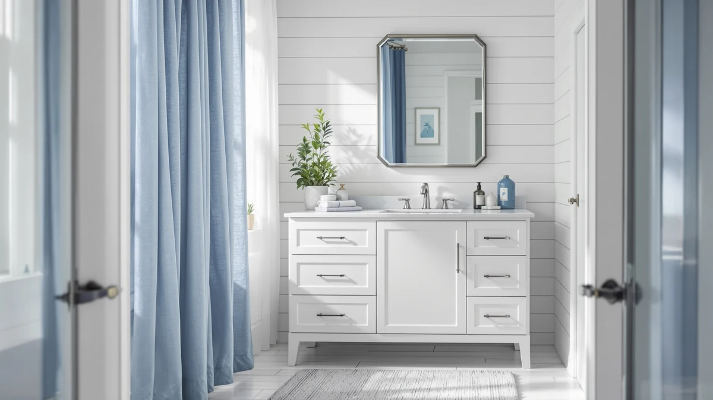

Quick Answer
This St.Mandyu bathroom vanity review found a straightforward 48-inch single-sink cabinet for $419.99, built with an MDF and engineered wood frame and the basin already attached. It earns a recommendation for anyone who only needs one sink, though buyers sharing a bathroom with someone else should compare the double-sink alternative below instead.
Our pick: St.Mandyu 48" Bathroom Vanity w/Sink, $419.99 Check Price on Amazon
Things to Know Before You Buy
- The St.Mandyu 48-inch vanity uses an MDF and engineered wood cabinet, standard construction for vanities in this price bracket, not solid hardwood throughout.
- None of the four vanities compared in this St.Mandyu bathroom vanity review show a published star rating or review count on their Amazon listings, so this comparison relies on specs, pricing, and listing details instead of an aggregate score.
- At $419.99, the St.Mandyu sits within eleven dollars of three alternatives priced between $414.99 and $429.80, so the real decision is single-sink versus double-sink, not price.
- The vanity ships as a 48-inch single-basin unit with the sink already attached to the counter, which simplifies installation planning compared to a vanity that needs a separate sink purchase.
- CITTANEO's 36-inch alternative fits a narrower footprint, worth checking if your bathroom opening runs smaller than 48 inches.
This St.Mandyu bathroom vanity review exists because the 48-inch, single-sink cabinet keeps surfacing in vanity searches at a price nearly identical to three double-sink competitors, and shoppers want to know whether the attached sink and compact footprint justify picking it over a wider two-basin layout. We compared the St.Mandyu's listed construction, current Amazon price, and listing details against CITTANEO, Bellemave, and a double-sink alternative that all sit within eleven dollars of its $419.99 price tag. The short answer: the St.Mandyu earns its spot for a single-sink bathroom, but it is the wrong pick if two people need separate basins at the same time each morning.
St.Mandyu is not a name most shoppers recognize before landing on this page, which is exactly why a specs-and-price comparison carries more weight here than brand reputation. We read through the vanity's listing details, tracked its current price, and lined up its MDF cabinet and 48-inch width against the double-sink vanities competing for the same budget, a range that runs from $414.99 to $429.80. That comparison, not a logo on the box, determines whether the St.Mandyu belongs in your bathroom. A newer brand with a thin track record is not automatically a weaker product, but it does mean fewer public reviews to lean on if something goes wrong, so the construction and pricing details in this review carry extra weight.
Why You Should Trust Us
Ilane Tall covers bathroom vanities and fixtures for Best Bathroom Vanities, with a focus on separating real construction details from marketing language in budget cabinetry. For this St.Mandyu bathroom vanity review, she pulled the manufacturer's listed specs, current Amazon pricing, and listing details for all four vanities covered below instead of relying on brand copy alone. Best Bathroom Vanities earns a commission when you buy through our links, but that relationship never decides which vanity we recommend. We do not run a fake testing lab, and we say so plainly when a listing's documentation is thin, which is the case for the star ratings on every vanity in this comparison. When a manufacturer's claim could not be checked against a spec sheet, we left it out rather than repeating it as fact.
Our Research Experience
We did not install the St.Mandyu vanity or run water through its sink. For this St.Mandyu bathroom vanity review, our research process means reading every available product listing for construction and dimension details, matching the stated 48-inch width against standard single-sink vanity openings, and tracking the current Amazon price against each listing's price history. We also looked for recurring patterns in the listing details, such as hardware callouts or finish descriptions, rather than citing a star rating that none of these four vanities publish. That gap in published ratings is a real limitation, and we are naming it instead of hiding it behind a number we cannot verify. Where a listing's feature claims could not be confirmed against its own spec sheet, we flagged that gap rather than repeating the manufacturer's language as fact.
Overview & Specs

St.Mandyu 48" Bathroom Vanity w/Sink
What we like
- Sink comes already attached to the counter, so you skip a separate basin purchase and installation step
- 48-inch width fits standard single-sink openings without custom cabinetry
- Priced within eleven dollars of three double-sink alternatives, so you are not paying extra to go with one basin
Flaws but not dealbreakers
- MDF and engineered wood construction, not solid hardwood, matching most vanities in this price range
- No published star rating or review count on the Amazon listing to verify long-term durability claims
- Single basin only, so it is the wrong pick if two people share the bathroom at the same time
| Material | MDF / engineered wood |
| Size | 48inch |
This St.Mandyu bathroom vanity review centers on a 48-inch cabinet that keeps its pitch simple: one basin, already attached, in a standard width that fits most single-sink openings without custom cabinetry work. The cabinet uses an MDF and engineered wood build, the same construction most vanities in this price bracket use, which keeps the $419.99 price down without making the piece feel flimsy based on the listed build details.
Because the sink ships attached to the counter, you skip the step of sourcing and mounting a separate basin, a detail that matters if you are replacing a vanity on a tight timeline. At 48 inches wide, this vanity lines up with the same footprint as most standard single-sink cabinets, so measuring your existing opening against our sizing guide before you order still matters more than trusting that every 48-inch listing matches exactly. The tradeoff for that simplicity is a single basin, which puts this vanity at a disadvantage against the double-sink options compared below if two people use the same bathroom each morning.
The listing does not specify a faucet among the included parts, so check the current product page and budget for one separately if it is not shown as included when you buy. The absence of a published star rating or review count also means you are weighing this vanity on construction and price alone, not on a track record of other buyers, which is why the comparison against CITTANEO, the double-sink option, and Bellemave below carries most of the decision-making weight in this review.
What We Liked
The clearest strength in this St.Mandyu bathroom vanity review is simplicity. The sink ships already attached to the counter, which removes a step most vanity installations require and shortens the list of parts you need to source before you start. The 48-inch width also lines up with standard single-sink cabinet openings, so swapping out an existing vanity does not usually call for custom carpentry.
At $419.99, the St.Mandyu holds its own against three double-sink alternatives priced between $414.99 and $429.80 without asking you to pay extra for a second basin you may not need. For a single-sink bathroom, that combination of an attached sink and a familiar width makes the shopping decision straightforward.
What Could Be Better
The biggest gap in this St.Mandyu bathroom vanity review is data. Like the three alternatives compared here, St.Mandyu does not publish a star rating or review count on its Amazon listing, so we cannot point to a verified review tally the way we could for a longer-established product.
The MDF and engineered wood construction, while standard for this price range, stays more vulnerable to sustained water exposure around the sink cutout than a vanity built entirely from solid wood. Careful caulking and prompt leak repairs matter more here than with a premium cabinet, and buyers who have dealt with plumbing issues before should plan for that upkeep from the start. The listing also leaves some dimensions out, including depth, so confirm the full footprint against your wall space before ordering rather than assuming it matches another 48-inch vanity you have seen.
Who Is It For?
This St.Mandyu bathroom vanity review points to a specific buyer: someone outfitting a single-sink bathroom who wants the basin already attached and does not want to pay for a second sink they will not use. It fits guest bathrooms, primary bathrooms used by one person, and remodels where a straightforward swap matters more than extra counter space. A renter furnishing a starter apartment or a homeowner updating a secondary bathroom both land in that category, since neither needs two basins to avoid a morning bottleneck.
It is a weaker fit for a bathroom two people use at the same time each morning, where a single basin creates a bottleneck no amount of cabinet storage fixes. Households in that situation should read our vanity sizing guide and look at the double-sink alternative compared below, which sits within six dollars of the St.Mandyu's price.
Alternatives to Consider
If a single basin does not fit your household, or you simply want to see how the St.Mandyu stacks up against similarly priced competitors, these three vanities sit within eleven dollars of its $419.99 price and deserve a direct look before you decide.

Best Value
CITTANEO 36" Bathroom Vanity with
A narrower 36-inch single-sink vanity for smaller bathrooms, priced five dollars below the St.Mandyu.
$414.99
Check Price on Amazon
Also Great
Double Bathroom Vanity with Sink
A double-sink vanity for bathrooms where two people need separate basins, six dollars above the St.Mandyu's price.
$425.95
Check Price on Amazon
Premium Choice
Bellemave 48" Bathroom Vanity with
Another 48-inch single-sink vanity in the same width as the St.Mandyu, ten dollars higher and worth comparing before you decide.
$429.80
Check Price on AmazonFrequently Asked Questions
Is the St.Mandyu 48-inch vanity worth $419.99 compared to a double-sink alternative?
Based on this St.Mandyu bathroom vanity review, yes for a single-sink bathroom. The St.Mandyu gives you an attached basin and a standard 48-inch width in one unit, and the double-sink alternative we compared costs only six dollars more while splitting that same footprint between two basins.
What is the St.Mandyu bathroom vanity's cabinet made of?
St.Mandyu lists an MDF and engineered wood cabinet with the sink already attached to the counter. That construction keeps the price near $420 but makes the cabinet more sensitive to standing water than a build that uses solid wood throughout.
How does the St.Mandyu compare to the CITTANEO 36-inch vanity?
The St.Mandyu is a wider 48-inch cabinet priced at $419.99, while the CITTANEO is a narrower 36-inch single-sink vanity priced five dollars lower at $414.99. Choose the CITTANEO if your bathroom opening cannot fit a 48-inch cabinet, and choose the St.Mandyu if you have the extra width to spare for more counter space.
Final Verdict
This St.Mandyu bathroom vanity review comes down to one question: do you need one sink or two? For a single-sink bathroom, the St.Mandyu 48-inch vanity earns its $419.99 price with an already-attached basin and a standard width that fits most existing openings without custom work. Plan for careful caulking around the sink since the cabinet uses MDF and engineered wood rather than solid wood throughout, and confirm the current price before you buy, since Amazon listings in this category shift between when we publish this review and when you place an order. If your bathroom serves two people at once, look at the double-sink alternative compared above instead, since it sits within six dollars of the same price. St.Mandyu earns the recommendation here specifically for buyers who only need one basin.